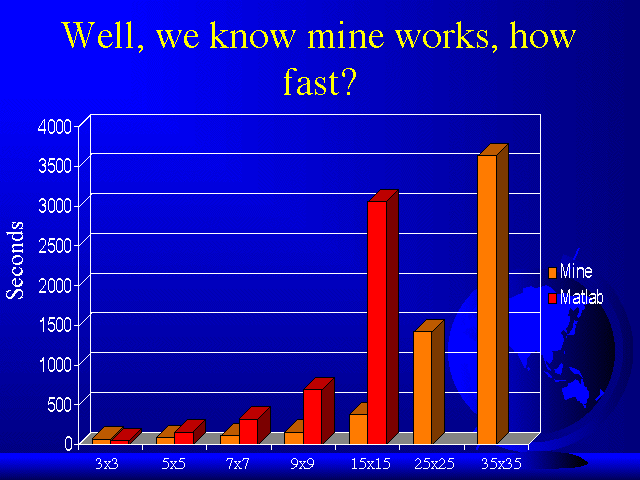

Obviously, my C program median filter worked. But, how well?
Below is a PowerPoint slide with a graph of the times it takes my C program and MathWorks Matlab "medfilt2" function to perform the same median filter, on the same image, as a function of window size.

As you can see, for all but the 3 x 3 window, mine beats Matlab. The reason why mine is slower with the 3 x 3 window is because my program imports the image as a text file (a BIG text file), counts through the text file to see how many rows and columns there are, reads the values into memory, performs the linked list median filter, and then writes the results out to a separate text file. The 3 x 3 result is slightly skewed by file I/O, but as the window size gets bigger, file I/O becomes negligible.
Looking at the graph you can see that my program is much faster then Matlab, especially with large window sizes. With a 15 x 15 window, mine takes about 350 seconds, Matlab takes about 10 times that, one order of magnitude longer.
In case you are wondering about the 25 x 25 and 35 x 35 window, Matlab couldn't do them. I ran the 25 x 25 window for over 2 hours, and finally Matlab crashed. Mine took about 23 minutes to complete the 25 x 25 window median filter.
The 35 x 35 window took my program a little over an hour to complete. I didn't even bother trying Matlab on the 35 x 35 window.
Why does it take longer for a bigger window?
If you think about it, since the window is bigger, most of the time there are more comparisons to make when you read in a new value. Remember the (N+1)/2 comparisons, well as N gets bigger, so do the number of comparisons. When N=1225 (35 x 35 window), the maximum amount of comparisons possible is (1225+1)/2=613. And with many impulses in the window, the impulses all get shifted to the ends of the window, therefore incurring the maximum number of comparisons. If you read in a new value that is equal to a value already in the window, then the older of the two values will point up to the newer of the two. So, if the window has all impulses, the new impulse will have to go all the way to the end of the window.
With images that have 100,000's pixels, you must make upto 613 (35 x 35 window) comparisons for almost every pixel, and that's going to take a long time.
NOTE: All comparisons were made on the same machine. I used the UNIX function "time" in order to time my C program. I used the built-in Matlab function "cputime" in order to time JUST the "medfilt2" command.
tassone@bucknell.edu